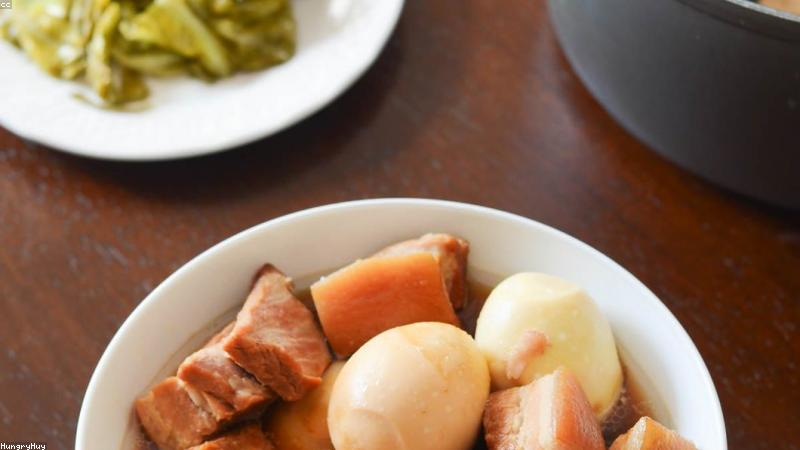
NO. 01
感人
最後一道菜
媽媽總說「吃飯別看手機」，他嫌煩。直到那通電話之後，他才懂那句話的重量。
閱讀故事
NO. 02
感人
那把傘
暴雨裡，陌生人把傘遞給她，自己走進雨中。多年後，她把傘遞給了另一個人。
閱讀故事

NO. 03
感人
錄音筆裡的早安
爺爺過世後，他在抽屜底找到一支錄音筆，按下去，是每一天。
閱讀故事
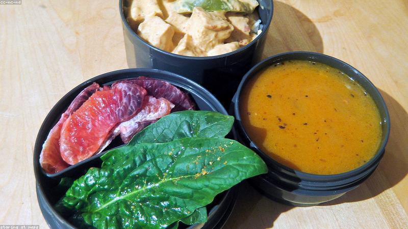
NO. 04
感人
便當的形狀
新同事天天幫她帶一份便當，理由荒唐得讓人想哭。
閱讀故事
NO. 05
感人
巷口的貓
她最慘的那年，唯一準時來見她的，是隻三花貓。
閱讀故事
NO. 06
感人
未寄出的信
父親去世後，她在保險箱找到一疊信，收件人都是她，日期寫到很遠的未來。
閱讀故事
NO. 07
感人
讓座的人
他讓座給一位老人，老人坐下後說了一句話，讓他鼻子發酸。
閱讀故事
NO. 08
感人
外婆的毛衣
她嫌毛衣土，塞櫃子底。直到某個冬天，才發現針腳裡藏著字。
閱讀故事
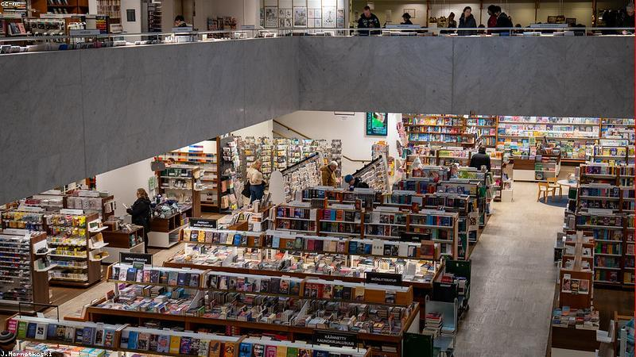
NO. 09
感人
書店的重逢
分手十年，他們在同一本書前伸手，書名剛好是當年的暗號。
閱讀故事
NO. 10
感人
沉默的父親
她以為父親不愛她。直到看見他手機裡，全是她的照片。
閱讀故事
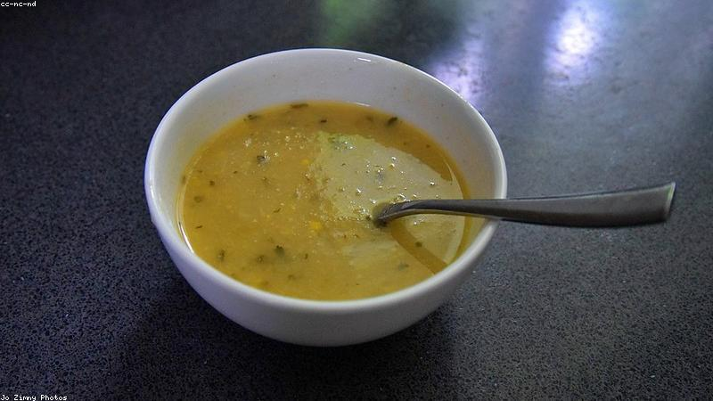
NO. 11
感人
一鍋湯的距離
獨居老人摔傷，鄰居端來一鍋湯，湯裡煮著整條巷子的溫度。
閱讀故事
NO. 12
感人
她還記得
母親失智多年，連他都認不出。唯獨每次見他，都叫得出那個小名。
閱讀故事
NO. 13
感人
躲在後排的她
單親媽媽偷偷去女兒畢業典禮，坐在最後一排，被女兒發現了。
閱讀故事
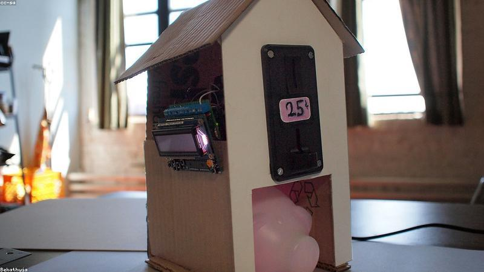
NO. 14
感人
小男孩的存錢筒
教堂捐款箱前，小男孩掏出全部零錢，說要給『挨餓的小朋友』。
閱讀故事
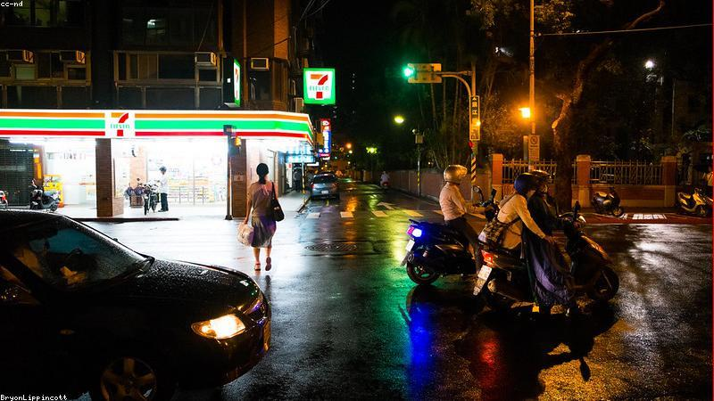
NO. 15
感人
深夜的關東煮
加班到凌晨，便利商店店員留了一份關東煮，附紙條：『辛苦了』。
閱讀故事
NO. 16
感人
退伍那天的車
他退伍那天，以為沒人來接。轉角卻停著那輛老舊的機車。
閱讀故事
NO. 17
感人
最後的風景
妻子漸盲，丈夫用一整個月，帶她把最愛的風景『再看』一遍。
閱讀故事
NO. 18
感人
種樹的老先生
他在荒地種了二十年樹，鄰居笑他傻。他說：『給孫子留點蔭。』
閱讀故事
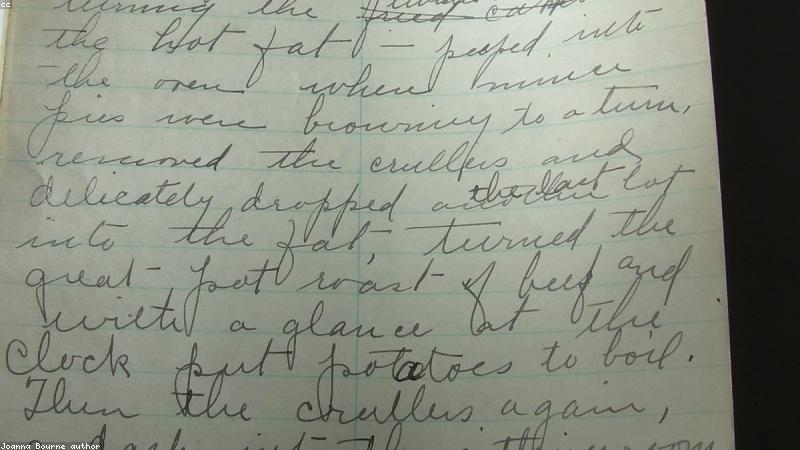
NO. 19
感人
手寫的食譜
媽媽的食譜寫得潦草，她一直看不懂。直到自己當了媽。
閱讀故事
NO. 20
感人
最後一班車
末班公車司機多等了一分鐘，改變了一個人的那一夜。
閱讀故事

NO. 21
勵志
翻過那座山
起點不重要，重要的是你沒停下腳步。
閱讀故事
NO. 22
勵志
海邊的第一道光
再長的夜，也擋不住一次日出。
閱讀故事
NO. 23
勵志
最後一名的衝刺
輸贏之外，還有「沒放棄」這種贏法。
閱讀故事

NO. 24
勵志
凌晨四點的書桌
你熬的每一夜，都在為某個轉彎鋪路。
閱讀故事
NO. 25
勵志
守塔的人
在沒人看見的地方發光，也是一種勇敢。
閱讀故事
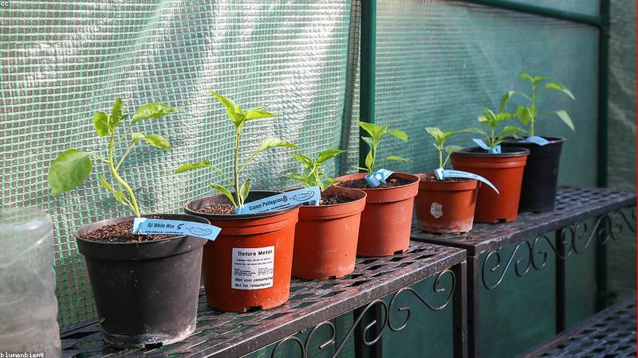
NO. 26
勵志
一顆種子的耐心
你現在埋下的，未必明天發芽，但一定會。
閱讀故事

NO. 27
勵志
畫壞的那張
搞砸的，往往是最後成功的草稿。
閱讀故事
NO. 28
勵志
往上走的樓梯
每一步都小，合起來就是高度。
閱讀故事

NO. 29
勵志
迷路時的指南針
方向亂了，先停下，比亂走強。
閱讀故事

NO. 30
勵志
黑夜裡的提燈
你能點亮的，不只是自己。
閱讀故事
NO. 31
勵志
搭一座橋
與其抱怨隔閡，不如動手搭。
閱讀故事
NO. 32
勵志
煙火前的沉默
最亮的那刻，前面總有一段黑。
閱讀故事

NO. 33
勵志
紙船的遠行
能啟程，就贏過停在岸邊。
閱讀故事
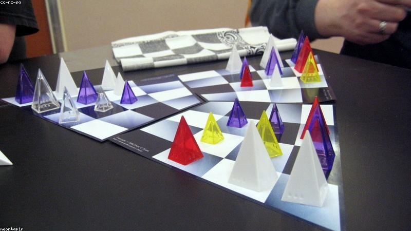
NO. 34
勵志
下一步棋
輸一子不算輸，棄局才是。
閱讀故事
NO. 35
勵志
滿天星下的決定
渺小，不代表不能發光。
閱讀故事
NO. 36
勵志
浪裡的練習
被打翻，是學會站穩的代價。
閱讀故事

NO. 37
勵志
岩壁上的手
抓不住的，就先鬆手，再找下一個。
閱讀故事
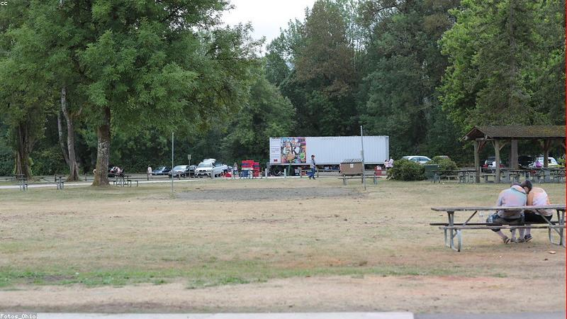
NO. 38
勵志
路上的風景
目的地會到，過程才叫人生。
閱讀故事
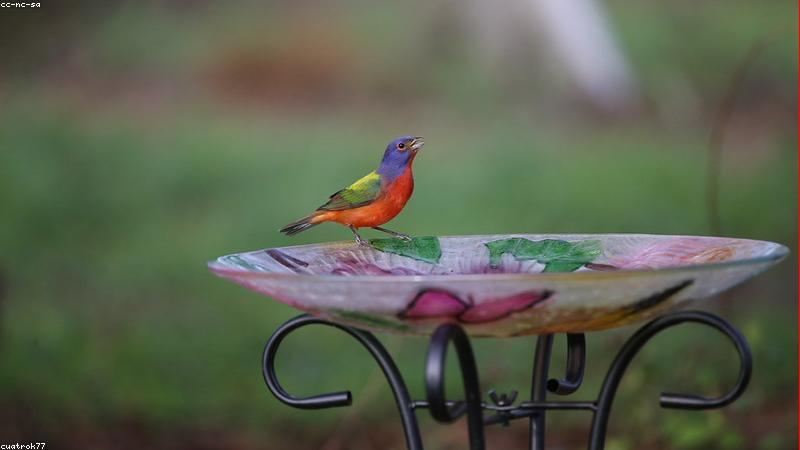
NO. 39
勵志
飛不起來的鳥
飛不遠，也要拍翅。
閱讀故事
NO. 40
勵志
亮起的那盞燈
靈感來時，別讓它熄。
閱讀故事
NO. 41
治癒
一杯溫度的拿鐵
有些治癒，從一杯剛好的溫度開始。
閱讀故事
NO. 42
治癒
窗台上的早晨
光會準時來，你只要拉開窗簾。
閱讀故事

NO. 43
治癒
手寫的回信
慢一點的回覆，反而療癒。
閱讀故事
NO. 44
治癒
小盆栽的力氣
照顧一個生命，也被生命照顧。
閱讀故事
NO. 45
治癒
貓與窗與太陽
曬太陽的貓，教會她什麼叫放下。
閱讀故事
NO. 46
治癒
織了一半的毯子
未完的，也可以很暖。
閱讀故事

NO. 47
治癒
一壺熱茶的傍晚
把一天放下，從倒茶開始。
閱讀故事
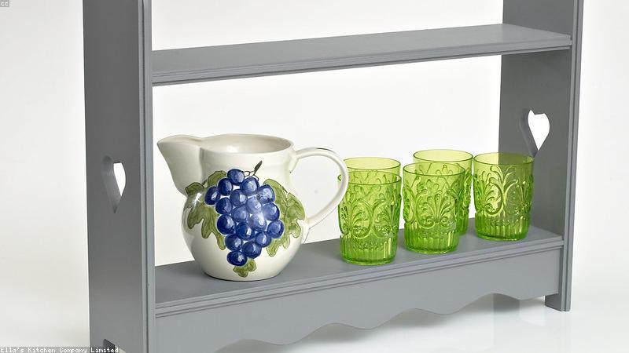
NO. 48
治癒
木書架的安靜
被書包圍，就不那麼孤單。
閱讀故事

NO. 49
治癒
暖燈下的人
有人等你回家，燈就為你亮。
閱讀故事
NO. 50
治癒
相握的手
最簡單的陪伴，是手還在。
閱讀故事